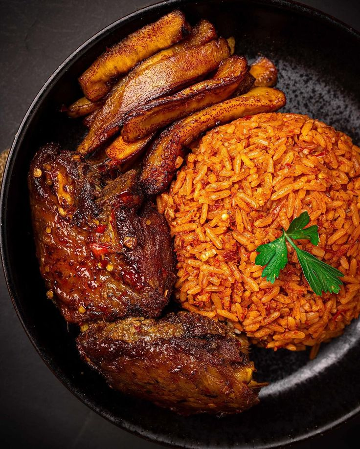

Jollof Recipe

The Ghanaian Jollof
The meal shown above is a locally prepared Ghanaian dish called Jollof, and below are the recipe involved in preparing it.
INGREDIENT
- rice
- oil
- fresh tomatoes
- tomato paste
- spices (ginger, garlic, onions, pepper, external sachet spices)
- Gizzards and Sausages
- Chicken
- riped plantain
STEPS
- steam up gizzards and chicken
- heat up some amount of oil in a saucepan
- add up some onions
- chop your tomatoes and add to oil
- stir up a bit and add your tomato paste
- let it cook for 5 mins and add up your spices
- stir up for sometime and add your meat stock
- let it cook for 10 mins and add your rice
- stir evenly and let it cook
- shallow fry your gizzard and chicken while rice is being cooked
- add the fried protein along the sausages to cooking rice and stir up well
- let rice cook up until soft and tender
- fry your plantain
- enjoy your meal
Home